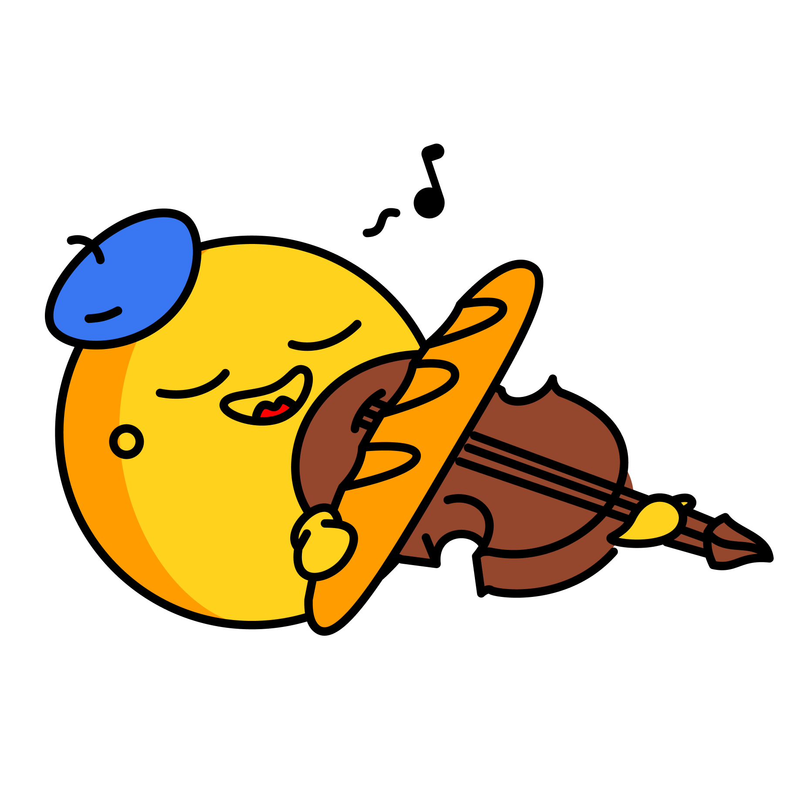

<!doctype html>
<html lang="en">
<head>
<meta charset="utf-8">
<meta name="viewport" content="width=device-width, initial-scale=1">
<title>Live recap — llama.cpp realtime voice</title>

<link rel="preconnect" href="https://fonts.googleapis.com">
<link rel="preconnect" href="https://fonts.gstatic.com" crossorigin>
<link rel="stylesheet" href="https://fonts.googleapis.com/css2?family=Source+Sans+3:wght@400;500;600;700;900&family=IBM+Plex+Mono:wght@400;500;600&display=swap">
<link rel="stylesheet" href="colors_and_type.css">
<link rel="stylesheet" href="styles.css">

<link rel="icon" href="assets/hf-logo.png">
</head>
<body>

<div id="app"></div>

<script type="text/x-template" id="app-template">
  <div class="layout" :class="{ 'sidebar-collapsed': sidebarCollapsed }">

    <!-- ====== Sidebar ====== -->
    <aside class="sidebar">
      <div class="sidebar-head">
        <div class="brand">
          
          <span class="brand-title">Live recap</span>
        </div>
        <button class="icon-btn small" title="Collapse sidebar" @click="sidebarCollapsed = true" aria-label="Collapse">
          <svg viewBox="0 0 24 24" fill="none" stroke="currentColor" stroke-width="2" stroke-linecap="round" stroke-linejoin="round"><polyline points="15 18 9 12 15 6"></polyline></svg>
        </button>
      </div>

      <button class="new-project-btn" v-if="!newProjectInputVisible" @click="newProjectInputVisible = true">
        <svg viewBox="0 0 24 24" fill="none" stroke="currentColor" stroke-width="2" stroke-linecap="round" stroke-linejoin="round"><line x1="12" y1="5" x2="12" y2="19"></line><line x1="5" y1="12" x2="19" y2="12"></line></svg>
        New project
      </button>
      <div v-else class="new-project-input">
        <input
          ref="newProjectInputEl"
          type="text"
          v-model="newProjectDraft"
          placeholder="Project name"
          @keydown.enter="createProjectAction"
          @keydown.escape="newProjectInputVisible = false; newProjectDraft = ''"
          autofocus
        >
        <button class="btn primary tiny" @click="createProjectAction">Create</button>
      </div>

      <div class="sidebar-section-label">Projects</div>
      <div class="project-list">
        <div
          v-for="p in projects"
          :key="p.id"
          class="project-item"
          :class="{ active: p.id === currentProjectId, renaming: p.id === renamingProjectId }"
        >
          <template v-if="p.id === renamingProjectId">
            <input
              type="text"
              v-model="projectNameDraft"
              @keydown.enter="commitRenameProject"
              @keydown.escape="cancelRenameProject"
              @blur="commitRenameProject"
              ref="renameInputEl"
              v-focus
            >
          </template>
          <template v-else>
            <button class="project-row" @click="switchProject(p.id)" @dblclick="beginRenameProject(p.id)">
              <span class="project-dot" :class="{ active: p.id === currentProjectId }"></span>
              <span class="project-name">{{ p.name }}</span>
            </button>
            <div class="project-actions">
              <button class="icon-btn tiny" :title="'Rename ' + p.name" @click="beginRenameProject(p.id)" aria-label="Rename">
                <svg viewBox="0 0 24 24" fill="none" stroke="currentColor" stroke-width="2" stroke-linecap="round" stroke-linejoin="round"><path d="M11 4H4a2 2 0 0 0-2 2v14a2 2 0 0 0 2 2h14a2 2 0 0 0 2-2v-7"></path><path d="M18.5 2.5a2.121 2.121 0 0 1 3 3L12 15l-4 1 1-4 9.5-9.5z"></path></svg>
              </button>
              <button v-if="projects.length > 1" class="icon-btn tiny danger" :title="'Delete ' + p.name" @click="deleteProject(p.id)" aria-label="Delete">
                <svg viewBox="0 0 24 24" fill="none" stroke="currentColor" stroke-width="2" stroke-linecap="round" stroke-linejoin="round"><polyline points="3 6 5 6 21 6"></polyline><path d="M19 6l-1 14a2 2 0 0 1-2 2H8a2 2 0 0 1-2-2L5 6"></path></svg>
              </button>
            </div>
          </template>
        </div>
      </div>

      <div style="flex: 1;"></div>

      <div class="sidebar-foot">
        <button class="sidebar-foot-btn" @click="showSettings = true">
          <svg viewBox="0 0 24 24" fill="none" stroke="currentColor" stroke-width="2" stroke-linecap="round" stroke-linejoin="round"><circle cx="12" cy="12" r="3"></circle><path d="M19.4 15a1.65 1.65 0 0 0 .33 1.82l.06.06a2 2 0 0 1-2.83 2.83l-.06-.06a1.65 1.65 0 0 0-1.82-.33 1.65 1.65 0 0 0-1 1.51V21a2 2 0 0 1-4 0v-.09A1.65 1.65 0 0 0 9 19.4a1.65 1.65 0 0 0-1.82.33l-.06.06a2 2 0 0 1-2.83-2.83l.06-.06a1.65 1.65 0 0 0 .33-1.82 1.65 1.65 0 0 0-1.51-1H3a2 2 0 0 1 0-4h.09A1.65 1.65 0 0 0 4.6 9a1.65 1.65 0 0 0-.33-1.82l-.06-.06a2 2 0 0 1 2.83-2.83l.06.06a1.65 1.65 0 0 0 1.82.33H9a1.65 1.65 0 0 0 1-1.51V3a2 2 0 0 1 4 0v.09a1.65 1.65 0 0 0 1 1.51 1.65 1.65 0 0 0 1.82-.33l.06-.06a2 2 0 0 1 2.83 2.83l-.06.06a1.65 1.65 0 0 0-.33 1.82V9a1.65 1.65 0 0 0 1.51 1H21a2 2 0 0 1 0 4h-.09a1.65 1.65 0 0 0-1.51 1z"></path></svg>
          Settings
        </button>
      </div>
    </aside>

    <!-- Sidebar peek (when collapsed) -->
    <button v-if="sidebarCollapsed" class="sidebar-peek" @click="sidebarCollapsed = false" title="Open sidebar" aria-label="Open sidebar">
      <svg viewBox="0 0 24 24" fill="none" stroke="currentColor" stroke-width="2" stroke-linecap="round" stroke-linejoin="round"><polyline points="9 18 15 12 9 6"></polyline></svg>
    </button>

    <!-- ====== Main ====== -->
    <main class="main">

      <!-- Top bar -->
      <header class="topbar">
        <div class="topbar-left">
          <button class="icon-btn" @click="sidebarCollapsed = !sidebarCollapsed" :title="sidebarCollapsed ? 'Show sidebar' : 'Hide sidebar'" aria-label="Toggle sidebar">
            <svg viewBox="0 0 24 24" fill="none" stroke="currentColor" stroke-width="2" stroke-linecap="round" stroke-linejoin="round"><line x1="3" y1="6" x2="21" y2="6"></line><line x1="3" y1="12" x2="21" y2="12"></line><line x1="3" y1="18" x2="21" y2="18"></line></svg>
          </button>
          <div class="topbar-title">
            <h1>{{ currentProject ? currentProject.name : 'Live recap' }}</h1>
            <div class="brand-sub" :class="statusClass">
              <span class="dot"></span>{{ statusLabel }}<span v-if="sourceLangGuess"> · src: {{ sourceLangGuess }} → {{ settings.recapLanguage }}</span>
            </div>
          </div>
        </div>
        <div class="topbar-actions">
          <button class="icon-btn" title="Upload audio file (debug: runs full pipeline)" @click="triggerAudioUpload" :disabled="recording" aria-label="Upload audio">
            <svg viewBox="0 0 24 24" fill="none" stroke="currentColor" stroke-width="2" stroke-linecap="round" stroke-linejoin="round"><path d="M21 15v4a2 2 0 0 1-2 2H5a2 2 0 0 1-2-2v-4"></path><polyline points="17 8 12 3 7 8"></polyline><line x1="12" y1="3" x2="12" y2="15"></line></svg>
          </button>
          <button class="icon-btn" :title="hasAudio ? 'Download full session audio (WAV)' : 'No audio yet'" :disabled="!hasAudio" @click="saveAudio" aria-label="Download audio">
            <svg viewBox="0 0 24 24" fill="none" stroke="currentColor" stroke-width="2" stroke-linecap="round" stroke-linejoin="round"><path d="M9 18V5l12-2v13"></path><circle cx="6" cy="18" r="3"></circle><circle cx="18" cy="16" r="3"></circle></svg>
          </button>
          <button class="icon-btn" :title="hasContent ? 'Save recap as Markdown' : 'Nothing to save yet'" :disabled="!hasContent" @click="saveMarkdown" aria-label="Save markdown">
            <svg viewBox="0 0 24 24" fill="none" stroke="currentColor" stroke-width="2" stroke-linecap="round" stroke-linejoin="round"><path d="M21 15v4a2 2 0 0 1-2 2H5a2 2 0 0 1-2-2v-4"></path><polyline points="7 10 12 15 17 10"></polyline><line x1="12" y1="15" x2="12" y2="3"></line></svg>
          </button>
          <button class="icon-btn" title="Archive this session, start a fresh one" @click="newSession" aria-label="New session">
            <svg viewBox="0 0 24 24" fill="none" stroke="currentColor" stroke-width="2" stroke-linecap="round" stroke-linejoin="round"><path d="M12 2v6"></path><path d="M12 22v-6"></path><path d="M4.93 4.93l4.24 4.24"></path><path d="M14.83 14.83l4.24 4.24"></path><path d="M2 12h6"></path><path d="M16 12h6"></path><path d="M4.93 19.07l4.24-4.24"></path><path d="M14.83 9.17l4.24-4.24"></path></svg>
          </button>
        </div>
      </header>

      <!-- Error bar -->
      <div v-if="error" class="error-bar">
        <span>{{ error }}</span>
        <button @click="error = ''" aria-label="Dismiss">✕</button>
      </div>

      <!-- Context prompt -->
      <section class="context-card" :class="{ collapsed: promptCollapsed }">
        <div class="context-head">
          <span class="label">
            <svg width="14" height="14" viewBox="0 0 24 24" fill="none" stroke="currentColor" stroke-width="2" stroke-linecap="round" stroke-linejoin="round"><path d="M14 2H6a2 2 0 0 0-2 2v16a2 2 0 0 0 2 2h12a2 2 0 0 0 2-2V8z"></path><polyline points="14 2 14 8 20 8"></polyline></svg>
            Context for the recap
          </span>
          <button class="chev" @click="promptCollapsed = !promptCollapsed">
            {{ promptCollapsed ? 'Show' : 'Hide' }}
            <svg viewBox="0 0 24 24" fill="none" stroke="currentColor" stroke-width="2" stroke-linecap="round" stroke-linejoin="round"><polyline points="6 9 12 15 18 9"></polyline></svg>
          </button>
        </div>
        <div class="context-body">
          <textarea
            v-model="contextPrompt"
            placeholder="e.g. This is a talk about LLM quantization at FOSDEM. Focus on technical details, methods, and benchmark numbers. Speaker is French."
            rows="2"
          ></textarea>
        </div>
      </section>

      <!-- Controls -->
      <section class="controls">
        <button class="record-btn" :class="{ recording }" @click="toggleRecording">
          <span class="mic-dot"></span>
          <span v-if="!recording">Start listening</span>
          <span v-else>Pause</span>
        </button>
        <div class="vu" :class="{ active: recording }" aria-hidden="true">
          <span v-for="(_, i) in 24" :key="i" class="bar" :style="vuBarStyle(i)"></span>
        </div>
        <div class="session-time">{{ elapsedDisplay }}</div>
      </section>

      <!-- Output panes -->
      <section class="panes">

        <!-- Transcript: small sliding window -->
        <div class="pane transcript">
          <div class="pane-head">
            <div class="pane-title">
              Transcript
              <span v-if="sourceLangGuess" class="lang-pill">{{ sourceLangGuess }}</span>
            </div>
            <div class="pane-actions">
              <button class="btn ghost" :disabled="!chunks.length" @click="copyTranscript">Copy</button>
            </div>
          </div>
          <div class="pane-body" ref="transcriptBodyRef">
            <div v-if="!chunks.length" class="transcript-empty">
              <span v-if="recording">Listening…</span>
              <span v-else>Live audio appears here as it's transcribed.</span>
            </div>
            <template v-else>
              <div
                v-for="c in chunks"
                :key="c.id"
                class="transcript-line"
                :class="{ pending: c.status === 'pending' || (c.status === 'streaming' && !c.transcript) }"
              ><span class="transcript-time time-hover"
                  @mouseenter="showTooltip($event, chunkTooltipText(c))"
                  @mousemove="moveTooltip($event)"
                  @mouseleave="hideTooltip()">{{ formatTime(c.time) }}</span>{{ c.transcript || (c.status === 'pending' ? '…' : c.status === 'streaming' ? '…' : '') }}</div>
            </template>
          </div>
        </div>

        <!-- Recap: per-chunk historical view, latest at top, older chunks faded -->
        <div class="pane recap">
          <div class="pane-head">
            <div class="pane-title">
              Running recap
              <span class="lang-pill">{{ settings.recapLanguage }}</span>
              <span v-if="liveRecapUpdatedAt !== null" class="lang-pill subtle time-hover"
                @mouseenter="showTooltip($event, formatWallTime(liveRecapUpdatedWallTime))"
                @mousemove="moveTooltip($event)"
                @mouseleave="hideTooltip()">updated {{ formatTime(liveRecapUpdatedAt) }}</span>
            </div>
            <div class="pane-actions">
              <button class="btn ghost" :disabled="!liveRecap.length" @click="copyRecap">Copy</button>
            </div>
          </div>
          <div class="pane-body" ref="recapBodyRef">
            <div v-if="!liveRecap.length" class="recap-empty">
              
              <p>Press <strong>Start listening</strong> and an evolving recap will fill in here. The model rewrites it each chunk — fragments merge, dead ends drop out. Older snapshots stay below, faded.</p>
            </div>
            <ul v-else class="recap-list">
              <li
                v-for="c in recapReversed"
                v-show="c.bullets && c.bullets.length"
                :key="c.id"
                class="recap-item"
                :class="{ streaming: c.status === 'streaming', historic: c.id !== latestRecapChunkId }"
              >
                <div class="recap-time time-hover"
                  @mouseenter="showTooltip($event, chunkTooltipText(c))"
                  @mousemove="moveTooltip($event)"
                  @mouseleave="hideTooltip()">{{ formatTime(c.time) }}</div>
                <div class="recap-bullets">
                  <div v-for="(b, i) in c.bullets" :key="i" class="recap-bullet"><template v-for="(seg, j) in renderBullet(b)" :key="j"><strong v-if="seg.b">{{ seg.t }}</strong><template v-else>{{ seg.t }}</template></template></div>
                </div>
              </li>
            </ul>
          </div>
        </div>
      </section>

      <p class="foothint">
        <kbd>Space</kbd> start/pause · <kbd>Esc</kbd> close settings · audio → /v1/chat/completions on llama.cpp
      </p>
    </main>

    <!-- ====== Settings dialog ====== -->
    <div v-if="showSettings" class="scrim" @click.self="showSettings = false">
      <div class="dialog" role="dialog" aria-modal="true">
        <div class="dialog-head">
          <h2>Settings</h2>
          <button class="icon-btn" @click="showSettings = false" aria-label="Close">
            <svg viewBox="0 0 24 24" fill="none" stroke="currentColor" stroke-width="2" stroke-linecap="round" stroke-linejoin="round"><line x1="18" y1="6" x2="6" y2="18"></line><line x1="6" y1="6" x2="18" y2="18"></line></svg>
          </button>
        </div>
        <div class="dialog-body">

          <div>
            <div class="section-heading">Mode</div>
            <div class="toggle-row">
              <div class="info">
                <span class="t">Mock mode</span>
                <span class="d">Plays a fake French talk on LLM quantization. Useful to try the UI without a backend.</span>
              </div>
              <input type="checkbox" class="switch" v-model="settings.mockMode">
            </div>
          </div>

          <div>
            <div class="section-heading">llama.cpp server</div>
            <div class="field">
              <label>Endpoint <span class="hint">— OpenAI-compatible streaming chat with multimodal audio input</span></label>
              <input type="text" v-model="settings.llmUrl" :disabled="settings.mockMode" placeholder="http://localhost:8080/v1/chat/completions">
            </div>
            <div class="field-row" style="margin-top: var(--space-3);">
              <div class="field">
                <label>Model</label>
                <input type="text" v-model="settings.llmModel" :disabled="settings.mockMode" placeholder="local">
              </div>
              <div class="field">
                <label>API key <span class="hint">(optional)</span></label>
                <input type="password" v-model="settings.apiKey" :disabled="settings.mockMode" placeholder="leave blank for local servers">
              </div>
            </div>
            <div class="field-row" style="margin-top: var(--space-3);">
              <div class="field">
                <label>Temperature</label>
                <input type="number" min="0" max="2" step="0.05" v-model.number="settings.temperature" :disabled="settings.mockMode">
              </div>
              <div class="field">
                <label>Top-K</label>
                <input type="number" min="0" max="500" step="1" v-model.number="settings.topK" :disabled="settings.mockMode">
              </div>
            </div>
          </div>

          <div>
            <div class="section-heading">Microphone</div>
            <div class="toggle-row">
              <div class="info">
                <span class="t">Echo cancellation</span>
                <span class="d">Disable when recording a meeting — the meeting app already handles echo, and this can muffle the speaker's voice.</span>
              </div>
              <input type="checkbox" class="switch" v-model="settings.echoCancellation">
            </div>
          </div>

          <div>
            <div class="section-heading">Audio chunking</div>
            <div class="field-row">
              <div class="field">
                <label>Chunk length <span class="hint">(seconds)</span></label>
                <input type="number" min="2" max="60" step="1" v-model.number="settings.chunkSeconds">
              </div>
              <div class="field">
                <label>Chunk overlap <span class="hint">(ms)</span></label>
                <input type="number" min="0" max="5000" step="50" v-model.number="settings.chunkOverlapMs">
              </div>
            </div>
            <p class="hint" style="margin: var(--space-2) 0 0; color: var(--fg-3); font-size: var(--fs-xs);">
              Audio is captured continuously — no samples are dropped between chunks. Overlap makes each chunk include the last
              <strong>{{ settings.chunkOverlapMs }}&nbsp;ms</strong> of the previous one, which helps the model handle words straddling a boundary.
            </p>
          </div>

          <div>
            <div class="section-heading">Context windows</div>
            <div class="field-row">
              <div class="field">
                <label>Audio window <span class="hint">— recent chunks sent as audio</span></label>
                <input type="number" min="1" max="20" step="1" v-model.number="settings.windowChunks">
              </div>
              <div class="field">
                <label>Text transcripts <span class="hint">— prior chunks as plain text</span></label>
                <input type="number" min="0" max="50" step="1" v-model.number="settings.textChunks">
              </div>
              <div class="field">
                <label>Recap snapshots <span class="hint">— even older chunks as bullet context</span></label>
                <input type="number" min="0" max="50" step="1" v-model.number="settings.recapWindow">
              </div>
            </div>
            <p class="hint" style="margin: var(--space-2) 0 0; color: var(--fg-3); font-size: var(--fs-xs);">
              Per request: <strong>{{ settings.windowChunks }}</strong> audio chunk(s), preceded by
              <strong>{{ settings.textChunks }}</strong> transcript(s) as text, preceded by
              <strong>{{ settings.recapWindow }}</strong> recap bullet snapshot(s) as compact context.
            </p>
          </div>

          <div>
            <div class="section-heading">Recap</div>
            <div class="field-row">
              <div class="field">
                <label>Output language</label>
                <select v-model="settings.recapLanguage">
                  <option>English</option>
                  <option>French</option>
                  <option>Spanish</option>
                  <option>German</option>
                  <option>Italian</option>
                  <option>Portuguese</option>
                  <option>Japanese</option>
                  <option>Chinese</option>
                </select>
              </div>
              <div class="field">
                <label>Max bullets <span class="hint">— hard cap on recap length</span></label>
                <input type="number" min="3" max="50" step="1" v-model.number="settings.maxRecapBullets">
              </div>
            </div>
            <p class="hint" style="margin: var(--space-2) 0 0; color: var(--fg-3); font-size: var(--fs-xs);">
              When the recap reaches <strong>{{ settings.maxRecapBullets }}</strong> bullets, the model is told to <em>compress</em> older ones to make room — except <strong>bold</strong> bullets, which stay pinned. Keeps the context bounded for long talks.
            </p>
            <div class="field" style="margin-top: var(--space-3);">
              <div class="field-label-row">
                <label>System prompt <span class="hint">— placeholders <code v-pre>{{LANG}}</code> and <code v-pre>{{MAX_BULLETS}}</code></span></label>
                <button class="btn ghost tiny" type="button" @click="resetSystemPrompt" title="Replace just the system prompt with the default">Reset prompt</button>
              </div>
              <textarea v-model="settings.systemPrompt" rows="8"></textarea>
            </div>
          </div>

        </div>
        <div class="dialog-foot">
          <button class="btn ghost" @click="resetSettings">Reset to defaults</button>
          <button class="btn primary" @click="showSettings = false">Done</button>
        </div>
      </div>
    </div>

    <!-- ====== Toast ====== -->
    <div v-if="toast" class="toast">{{ toast }}</div>

    <!-- ====== Tooltip ====== -->
    <div v-if="tooltip.visible" class="app-tooltip" :style="{ top: tooltip.y + 'px', left: tooltip.x + 'px' }">{{ tooltip.text }}</div>
  </div>
</script>

<!-- Vue 3 from CDN -->
<script src="https://unpkg.com/vue@3.4.27/dist/vue.global.prod.js"></script>
<script src="db.js"></script>
<script src="audio.js"></script>
<script src="app.js"></script>

</body>
</html>
